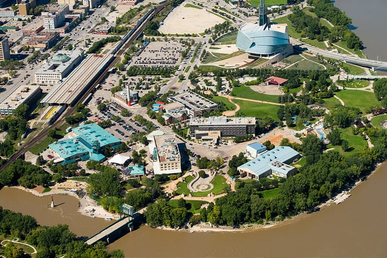

The Forks
 Located within the crux of the Assiniboine river and the Red river its history has been
the meeting place
for people for over 6,000 years!
Here are some quick facts about The Forks
- Used to be an abandon railyard
- over 4 million people come to The Forks each year
- more then 1,200 people work on site
- contributes over 180 million dollars to the local economy
The Market
Hours of Operation: 7AM - 10PM
Some tenants may opern earlier or close later at their discretion.
Want to know more? click here
Princess Auto Stadium
Discover the excitement of Princess Auto Stadium in Winnipeg.
Perfect for sports fans and families looking for fun activities.
Enjoy world-class hockey, skating events, and lively tournaments.
A must-visit destination for tourists exploring Winnipeg!
Watch a Short Video
Downtown
Wander around downtown for the day and you'll find yourself surrounded by Winnipeg’s famed architecture, a mix of turn of the 19th century and early 20th century masonry (or, as we like to say, stone skyscrapers) and modern glass buildings. You’ll also be introduced to downtown’s culinary scene, where gourmet sandwiches, food trucks, and handcrafted cocktails are aplenty.
The Forks, Winnipeg’s most visited tourist destination, is also part of downtown. Amongst its sprawling grounds you’ll find the iconic architectural marvel, the Canadian Museum for Human Rights, the Children’s Museum, the Manitoba Theatre for Young People and the bustling Forks Market– which contains vendors selling locally-made gifts, food, fine wines, and skate rentals in the winter. The iconic river intersection boasts one of the world’s longest skating trails in the winter, and water taxis and boat tours in the summer.
Canadian Museum for Human Rights
The Canadian Museum for Human Rights (CMHR; French: Musée canadien pour les droits de la personne) is a Canadian Crown corporation and national museum located in Winnipeg, Manitoba, adjacent to The Forks. The purpose of the museum is to "explore the subject of human rights with a special but not exclusive reference to Canada, to enhance the public's understanding of human rights, to promote respect for others and to encourage reflection and dialogue."

I'll show you the walk through for Human rights museum in Winnipeg!